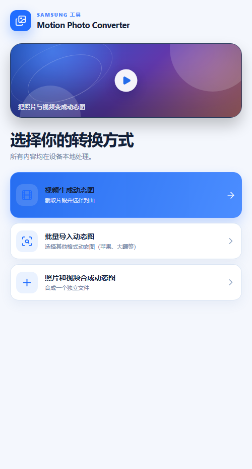
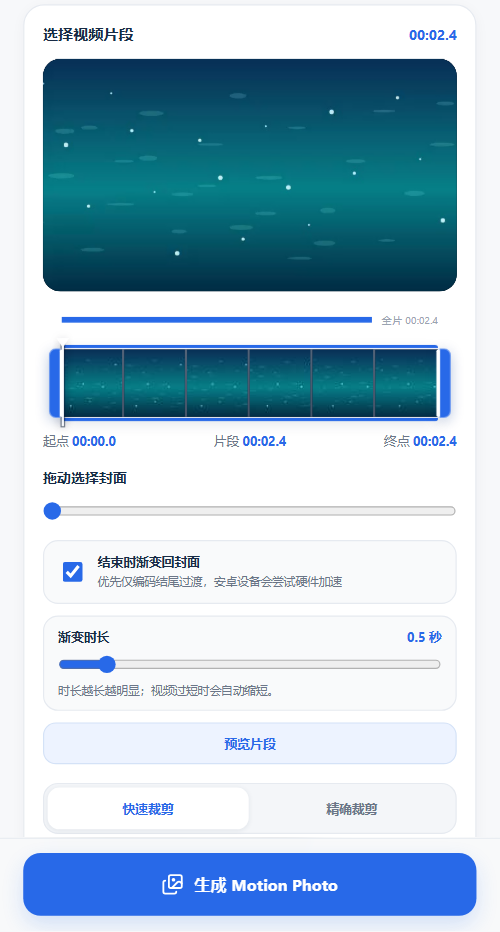
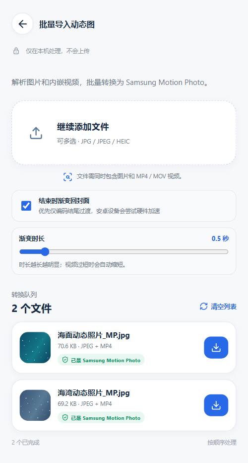
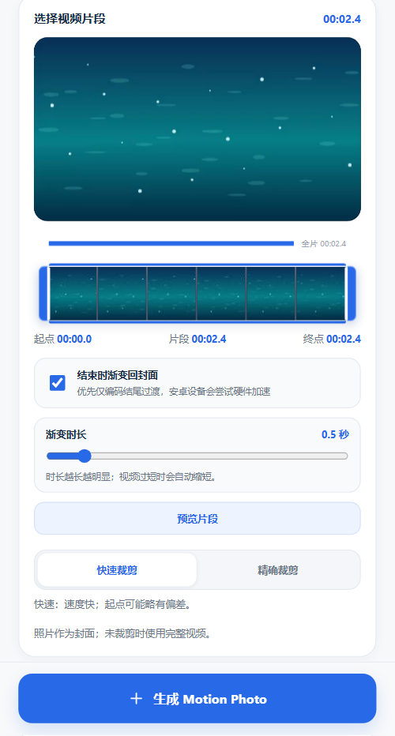

视频生成动态图
截取视频片段，选择一帧作为封面。
手机优先的操作指南
从视频制作、批量转换已有动态照片，或用独立照片与视频合成。按你的素材选择方式，跟着步骤即可完成。
选择创建方式
截取视频片段，选择一帧作为封面。
导入多张内嵌视频的动态照片并转换。
指定照片封面，再合成视频片段。
Pictures/Motion Photo Tool。渐变默认值：结束时渐变回封面默认开启，时长为 0.5 秒。可在对应模式中调整或关闭。

截取一段视频，并从片段中挑选一帧作为封面。
操作步骤
不调整选段时默认使用完整视频。封面保存为 JPEG。启用结尾渐变时优先处理视频结尾的短过渡；Android 设备会尝试硬件加速，不兼容时可能回退到软件处理。

一次导入多张已有动态照片，逐项识别、转换或直接保存。
导入与处理
已符合目标格式，可直接点该行下载按钮保存。
点该行的 转换，或点页面底部的 全部转换 顺序处理。
检查文件内容与格式；失败项会显示原因。普通静态图应改用照片 + 视频模式。
批量渐变：默认启用结束时渐变回封面，时长初始为 0.5 秒。设置会应用于随后转换的文件；处理期间请保持页面打开。

用一张照片作为封面，再把视频片段合成为动态照片。
操作步骤
未裁剪时使用完整视频。此模式没有单独的视频封面滑块，因为所选照片始终作为封面。

按现有素材选择入口；遇到预览、处理或保存问题时可先查看这里。
按素材选择
隐私与兼容性：文件在本机读取和处理，不会上传；原始文件不会被覆盖。Android 输出到 Pictures/Motion Photo Tool，Web 版通过浏览器下载。Android 最低支持 Android 10；较新的 System WebView 有助于视频处理。
遇到问题时
Pictures/Motion Photo Tool，或在文件管理器搜索最近生成的 _MP.jpg。